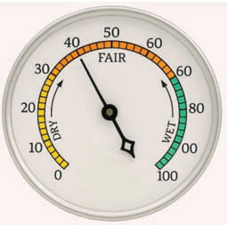
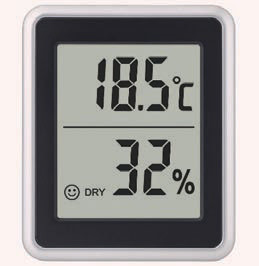
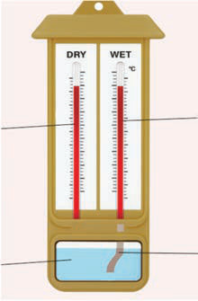

This creates water vapour to the atmosphere. The level of humidity increases or decreases depending on the rise or fall in temperature of the specific area. Humidity is measured in percentage (%), and the instrument used to measure humidity is called a hygrometer. This device measures the percentage of moisture present in the air.
There are three types of hygrometers. The first type is a hygrometer with an arrow, which measures humidity by directly recording and displaying the percentage of vapour in the air using an arrow. The second type is a dry and wet bulb hygrometer, consisting of two thermometers in a single tube. A dry thermometer that measures air temperature and a wet thermometer with a muslin cloth dipped in water that measures humidity. The third type is a digital hygrometer, which provides humidity readings electronically. Figure 5 shows the three types of hygrometers.

(a) Arrow hygrometer

(b) Digital hygrometer

(c) Dry and Wet bulb hygrometer
Figure 5: Types of hygrometers